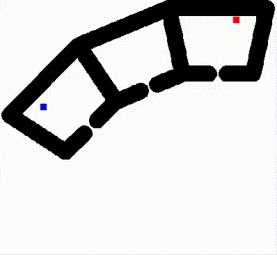
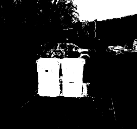
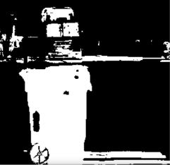
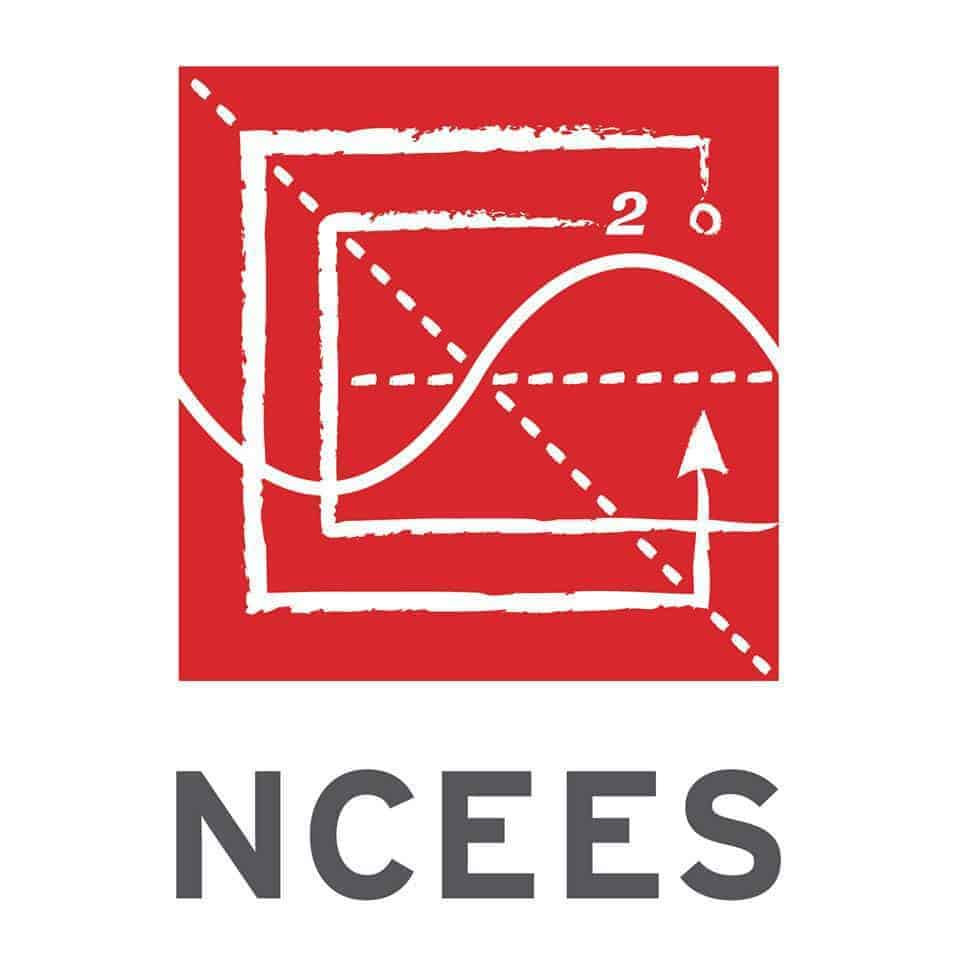

|
Nathan Cusson-Nadeau I am an engineer, roboticist, and Green-Tech enthusiast currently working on the research and development of aerial drones. I am primarily interested in the advancement of robotics technology from all facets, but have particular expertise in control theory, software development, and machine learning. I graduated from UC San Diego for both my MS and BS in Mechanical Engineering and Environmental Engineering respectively and formerly served as a researcher in the Contextual Robotics Institute in the Safe Autonomous Systems Lab where I was advised by Professor Sylvia Herbert. Across my career, I have worked on software development and controls for robotic systems, autopilot for Unmanned Aircraft Systems (UAS), building automation control systems (BACS), and environmental consulting. |

|
Projects & ResearchMy professional work and research history spans the broad domains of advanced control theory, robotics software development, robot motion planning, state-estimation, green-technology, building automation control systems, and oceanography. |
|
|
Validation of Refining Control Barrier Functions on Hardware
Code / Video / Thesis Demonstrated that refineCBF [arxiv] from Sander Tonkens and Sylvia Herbert can be applied on hardware-in-the-loop use case and in the presence of changing obstacles. The algorithm provides a constructive method to take an initial candidate control barrier function (CBF) and refine it to be the least conservative and safe control barrier function upon convergence. CBF's can be used to enforce and encode safety constraints into a control system through the use of a safety filter. Thus, a robot with a goal-seeking control policy can maintain optimality while staying as safe as possible. |


|
Delayed Weighted A*
Code / Report Implemented a novel variation of the A* algorithm from scratch, coined Delayed Weighted A*, which improves performance of algorithm in larger and more complicated configuration spaces. |


|
Dynamic Programming
Code / Report Used the dynamic programming principle to construct the optimal control policy for an agent in a randomly generated door-key grid-world environment to reach a goal. Received highest grade in class for implementation and report. |

|
Particle Filter SLAM
Code / Report Implemented particle filter SLAM from scratch to reconstruct a real autonomous car's environment using sensor fusion of LIDAR and IMU data. |
|


|
Color Classification and Recycling Bin Detection
Code / Report Used logistic-regression to train a pixel-classifier to detect pixels of recycling bin blue. Then used this classifier to detect recycling bins in images using the Python OpenCV libary. |

|
ROMS Research
Videos Used MATLAB to analyze oceanographic data from the Regional Ocean Modeling System (ROMS) to assess efficacy of model in predicting oceanic conditions such as temperature, and vorticity. |
Work Experience |
|
Guidance Navigation & Control Engineer
Alare Technologies, LLC January 2024 — Present
|
|
|
|
Autopilot Software Engineer - Intern
General Atomics - Aeronautical Systems, Inc. June 2022 — September 2022 Developed regression tests in the Python and C programming languages for the NGPS system of the Gray Eagle Drone, which utilizes Kalman Filtering techniques to enable the autopilot system to land in GPS-denied scenarios. Required an intimate understanding of Kalman Filtering and the drone's autopilot software. |
|
|
Controls Engineer II
Emcor Services - Mesa Energy Systems October 2019 — December 2020 Designed and programmed building automation control systems for HVAC and lighting systems for clients in the greater Los Angeles area, such as NASA-JPl, UCLA, and NBC Universal. |
|
|
Controls Engineer I
Albireo Energy March 2018 — September 2019 Designed building automation control systems for HVAC systems for clients in the greater San Diego area, such as UCSD, Qualcomm, Apple, and One America Plaza. The most notable and rewarding projects I completed would be the Ultracold Strontium Lab's specialized HVAC control system, and the Nuevo West & East graduate housing campus at UCSD. |
|
|
Environmental Engineer - Associate
SCS Engineers October 2017 — March 2018 Performed air emission data analysis and modeling for environmental projects along with other miscellaneous enviromental matters. Fulfilled and processed various permit applications for air, water, and land use related projects. |

|
Student Researcher
Scripps Institute of Oceanography 2016 — 2017 Student researcher under the advisement of Esteemed Research Oceanographer Arthur J. Miller. Assessed the efficacy of the Regional Ocean Modeling System (ROMS) in predicting oceanic conditions such as temperature, and vorticity. Discovered the presence of the Butterfly Effect in the ROMS model. |
Education |
|
|
Master of Science (MS) in Mechanical and Aerospace Engineering
University of California, San Diego September 2021 — September 2023 Bachelor of Science (BS) in Environmental Engineering University of California, San Diego September 2013 — June 2017 |
|
|
Supplemental Courses: Mechatronics & Dynamics
San Diego State University January 2021 — May 2021 |
Certifications |

|
C Programming Language Fundamentals
Coursera September 2023 (No Expiration) Certification Link |
|  |
EIT: Engineering in Training
NCEES (National Council of Examiners for Engineering and Surveying) February 2018 (No Expiration) Certification Link |
|
Open-source code of this website is based on Jon Barron's website. Massive shout outs to them for the fantastic template. |